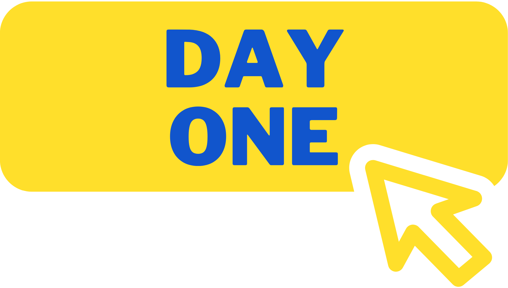
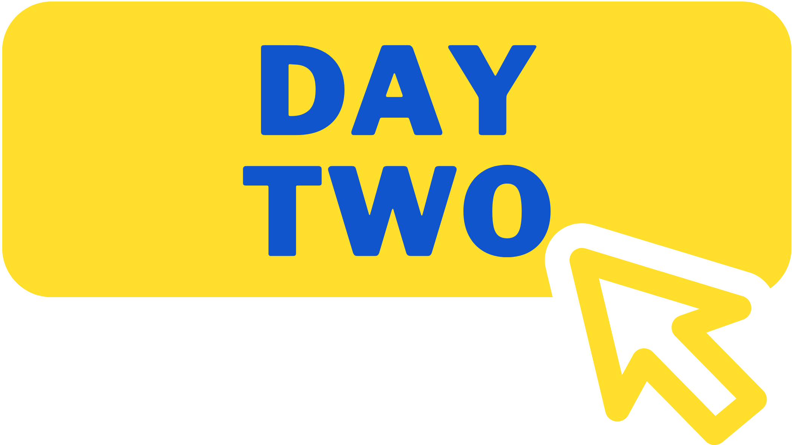
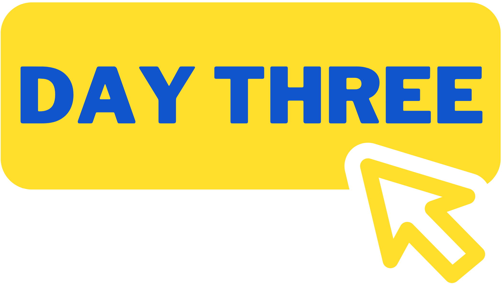
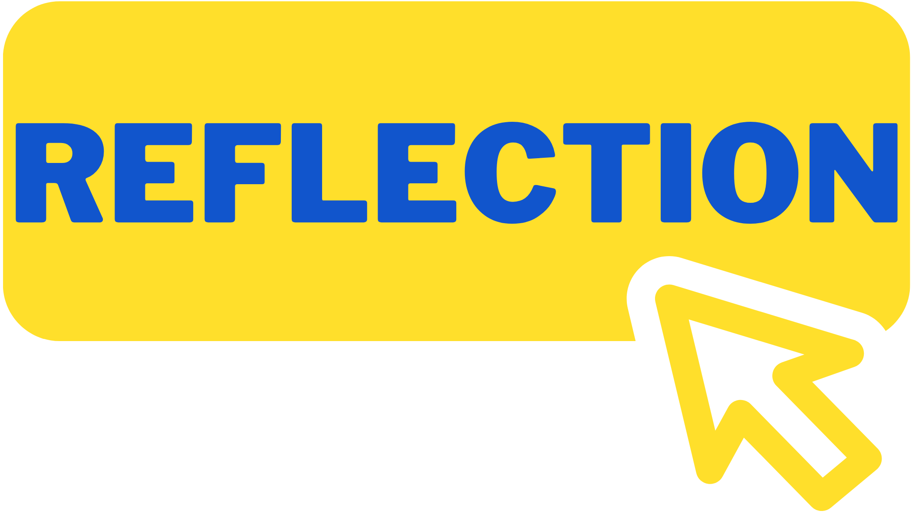

Go To:
   After completing the HTML research page portion of this culminating task, I started brainstorming for this Scratch portion. After deciding on a topic (space) that corresponded with the overarching theme of this webpage; science and STEM, I experimented with the features that encompassed Scratch. Finally, after a couple of days, I started with the introduction of my interactive Scratch program, which is attached above. It took a while to get to this stage, as I hoped to familiarize myself with the functions available in Scratch and also decide on a surefire theme and idea. But, after completing this portion, it gave me confidence to continue the program.
Overall, with technical skills, not too much changed from the last day to this one. I practiced more to cause the program to achieve this state. Also, here was where I encountered a creative block, as my initial plans seemed too far-fetched to implement in Scratch programming. So, I decided to brainstorm more and settled on the scene above.
As I went further into the project, I had to use more complex functions and Scratch block. I engaged in trial and error and watched tutorials to further my understanding. Attached is a block that I had programmed this day which used a "forever" block, which was a concept new to me.
On day 4, I completed the project (The final touches were completed later), and the final product is in the zip file as well as embedded above. Further reflection about the process can be found below.
Personally, Scratch was a method of programming that I was vastly unfamiliar with prior to this process, therefore, it took some adjusting to. Learning how to use the different tools was one of my biggest obstacles. Although I knew what exactly I wished to accomplished, it was difficult figuring out how to put it in action. I did not know what exactly the "forever" loops were, and there was a lack of the else if statement; I learned to use nested if&else blocks to accomplish the same purpose. I also had a slight creative block and was unsure of how to make the project interesting and engaging.
If I had another opportunity to complete this project and create another Scratch program, I would definitely extend the escape room-esque sequence. I found it very interesting to play with the animation and interactive features in that context and it would've been interesting to allow the user to toggle between multiple rooms to collect clues. In addition, perhaps more characters would make the story more compelling. Finally, if I had another opportunity, I would put more effort into the planning stage of this project. The creation process would have gone by much more smoothly and effectively if a better plan was set out before starting.
This experience has taught me more about adapting to new or unfamiliar technologies. As a student who is hoping to go into the STEM field, specifically engineering, I will encounter a variety of new technologies and programs and will have to adapt to them and learn how to use them to remain competitive. Also, it has helped me develop more analytical thinking and problem-solving skills. Attempting and problem-solving to find out how to complete certain tasks is a process that is very vital and the skills required for that process have been built through this task.